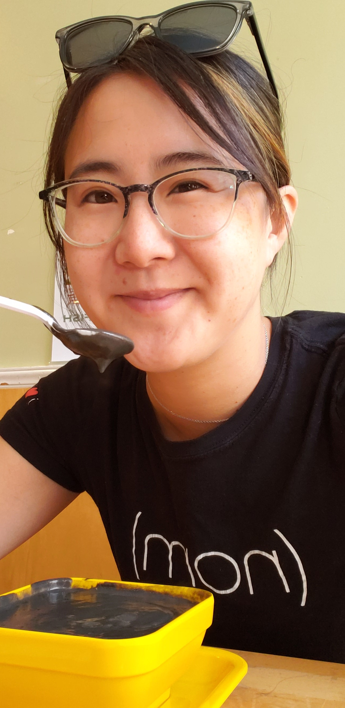

About Me
I'm a pragmatic introvert with a dark sense of humor and a love of rich colors. I came from a difficult past that has given me a no-nonsense attitude mixed with a streak of 'Sure, let's just see what happens.'
My dream job involves minimal daily interaction with customers/clients, the freedom to try new methods as long as the objective is achieved, shorter term projects > 1 yr, and to work with a group of interesting, intelligent, dedicated collaborators. I like the idea of building all kinds of things from a very regimented environment. Deep learning and AI are intriguing concepts. Add a dash of travel on top, and that's pretty close to perfect!
My favorite hobbies are gardening, reading, instigating shannignans, and cooking!